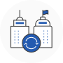

재창업자금 지원기업에 대한 이행보증 지원



기업 간 교류란 사업상 경쟁상대가 아닌 서로 다른 업종의 기업이 모여 그룹을 형성하고 각자의 기술, 정보, 지식을 교류함으로써 개별기업의 경영애로를 상호협력으로 해결하고 경쟁력을 향상하는 경제공동체 활동입니다.
사업관련문의는 (사)중소기업융합중앙회로 해주시기 바랍니다.
사업관련문의는 (사)중소기업융합중앙회로 해주시기 바랍니다.
사업특징
- 1개 업종별 1개사로 제한해 그룹을 결성
- 기업의 경영자로 구성해 서로 대등한 관계를 유지
- 지리적으로 가까운 지역의 기업으로 구성
- 회원 스스로 자주적으로 운영
- 상부상조와 상호신뢰가 기본정신
- 진취적이며 미래 지향적인 안목
교류유형
정보교환
- 정례회, 강연회, 견학회등 회의를 중심으로 운영하며, 회원기업 간의 경영. 기술 정보를 교환하는 데 주력
자원협력형
- 각 회원사가 가진 생산·연구·시험설비이용, 경영·기술의 Know-How 제공, 판로공유, 인재파견 등을 실시
융합기술개발형
- 각 회원 간 보유자원을 제공하고 역할을 분담하여 공동 연구함으로써 단독으로 개발할 수 없는 신기술이나 신제품을 개발
활용내용
- 중소기업자 간의 자발적인 학습조직으로 월례회, 견학회, 공동과제에 대한 강습회 개최
- 지식·기술융합화 활동으로 신기술·신제품·신서비스를 공동개발하고 공동마케팅, 공동법인 설립 등 공동사업의 추진
(사)중소기업융합중앙회 지원내용
- 기업간 교류전문가 파견, 창립총회 비용지원
- 이 업종 기술협력 멘토링 지원사업
- 지식·기술융합 경진대회 및 우수교류회, 유공자에 대한 정부포상 실시
- 합동월례회, 임원·리더워크숍, 포럼, 초청간담회, 지역플라자, 국제심포지엄 개최
- 국내·외 교류회 간 자매결연 알선
- 전국 각 대학 산학협력단과의 교류알선
- 지식·기술융합 센터운영(13개 지역)
- 융합기술 과제발굴 자금지원
- 지식·기술융합 성과확산을 위한 코칭시스템 구축(멘토링 지원)
- 이 업종 전문기업 간 지식·기술융합 활성화 인프라 구축(DB구축)
기업간 교류활동과 기대효과
- 서로 다른 업종 간의 교류를 통하여 지식·기술 융합을 하는 경제공동체 활동으로 신성장동력산업 등 미래 성장산 업 육성에 기여
- 기업 상호간 학습으로 불확실성 높은 미래 대응역량 제고